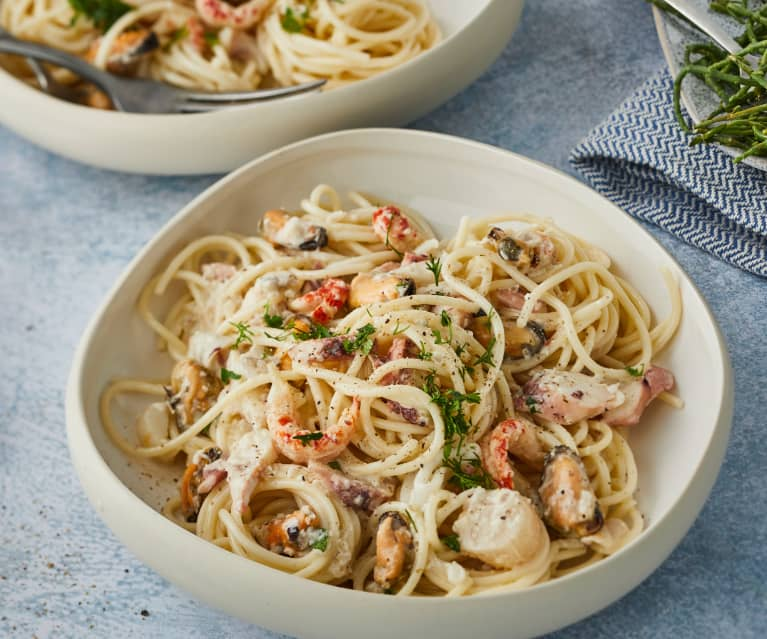

Battre les œufs avec le parmesan, le sel et le poivre.
Égoutter les pâtes en réservant un peu d'eau de cuisson.
Mélanger les pâtes chaudes avec les lardons et la préparation aux œufs.
Ajouter un peu d'eau de cuisson si nécessaire pour la sauce.
Vos pâtes sont prêtes à être servies !
Origine italienne contestée : Bien que les pâtes carbonara soient considérées comme un plat typique de Rome,
l'origine exacte de la recette reste un sujet de débat....
Clique ici pour en savoir plus !
Pâtes à la Bolognaise
Pâtes
Viande hachée (bœuf ou mélange porc/bœuf)
Tomates concassées
Carottes
Oignons
Ail
Herbes de Provence
Huile d'olive
Sel
Poivre
Faire cuire les pâtes selon les instructions sur l'emballage.
Faire revenir l'oignon et l'ail dans de l'huile d'olive.
Ajouter la viande hachée et la faire cuire jusqu'à ce qu'elle soit bien dorée.
Ajouter les tomates concassées, les carottes râpées, les herbes, le sel et le poivre.
Laisser mijoter à feu doux pendant environ 30 minutes.
Servir les pâtes avec la sauce bolognese par-dessus.
Tu pensais qu'on pouvait utiliser la sauce bolognaise seulement pour les pâtes ? Eh bien détrompe toi ! voici d'autres idées de recettes quelque peu originales...
Pâtes aux Fruits de Mer

Pâtes
Crevettes
Moules
Calamars
Ail
Tomates
Basilic
Huile d'olive
Sel
Poivre
Faire cuire les pâtes selon les instructions sur l'emballage.
Faire revenir l'ail et ajouter les fruits de mer.
Ajouter les tomates hachées et laisser mijoter quelques minutes.
Servir les pâtes avec la sauce aux fruits de mer.
Fun Fact : Saviez-vous que les pâtes aux crevettes étaient déjà appréciées dans l'Antiquité ? Les Romains,
connus pour leurs recettes créatives avec des fruits de mer !
Pour en savoir plus sur l’histoire des pâtes et des fruits de mer, tu peux consulter
cet article fort intéressant !